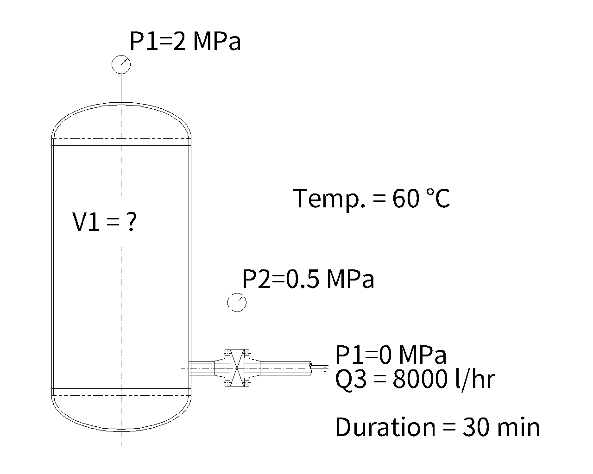
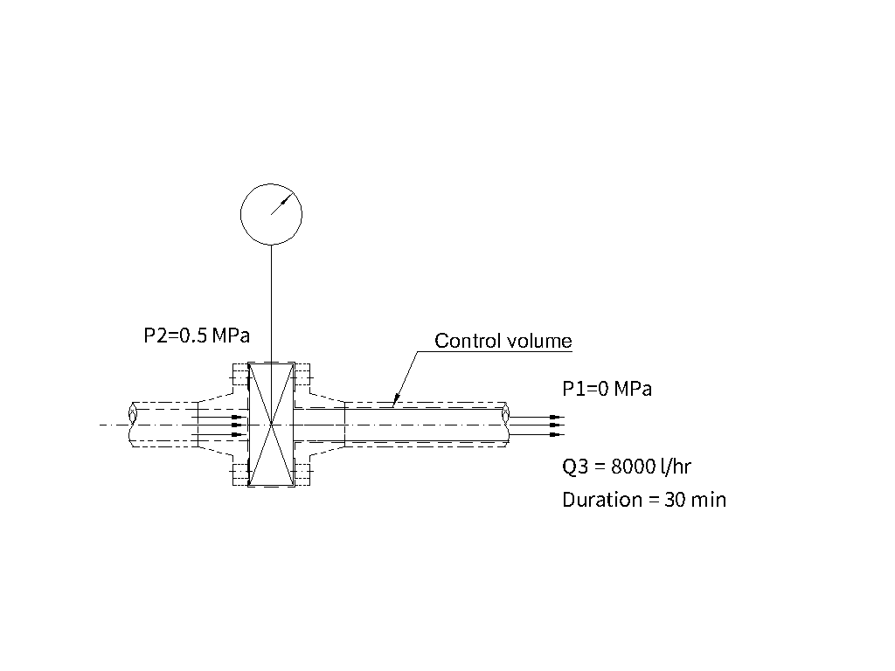
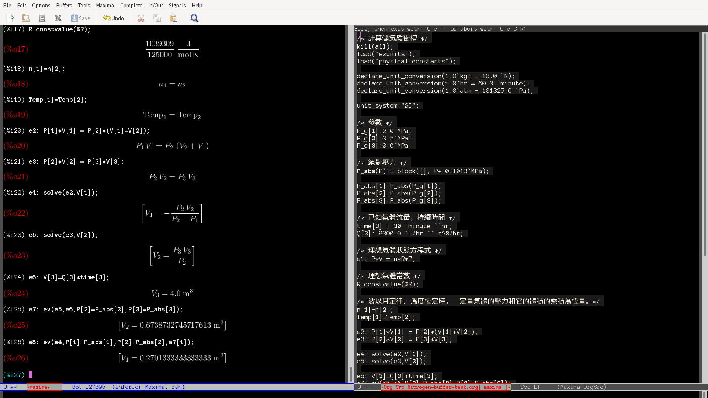

氮氣緩衝槽容積需求計算
Table of Contents
1. 緩衝槽要求


- 出口流量： 8000.0 L/hr
- 設計壓力： 20 kg/cm2
- 出口管嘴： 2" 管
- 入口管嘴： 3" 管
- 安全閥管嘴： 1/2" 管
- 入口壓力： 20 kg/cm2
- 出口壓力： 5 kg/cm2
- 桶槽容積： ?
- 設計溫度： 攝氏 60 度
3. Ideal Gas Law/ 理想氣體定律
4. Maxima
4.1. 計算儲氣緩衝槽
/* 計算儲氣緩衝槽 */
kill(all);
load("ezunits");
load("physical_constants");
declare_unit_conversion(1.0`kgf = 10.0 `N);
declare_unit_conversion(1.0`hr = 60.0 `minute);
declare_unit_conversion(1.0`atm = 101325.0 `Pa);
unit_system:"SI";
/* 參數 */
P_g[1]:2.0`MPa;
P_g[2]:0.5`MPa;
P_g[3]:0.0`MPa;
/* 絕對壓力 */
P_abs(P):= block([], P+ 0.1013`MPa);
P_abs[1]:P_abs(P_g[1]);
P_abs[2]:P_abs(P_g[2]);
P_abs[3]:P_abs(P_g[3]);
/* 已知氣體流量，持續時間 */
time[3] : 30 `minute ``hr;
Q[3]: 8000.0 `l/hr `` m^3/hr;
/* 理想氣體狀態方程式 */
e1: P*V = n*R*T;
/* 理想氣體常數 */
R:constvalue(%R);
/* 波以耳定律: 溫度恆定時，一定量氣體的壓力和它的體積的乘積為恆量。*/
n[1]=n[2];
Temp[1]=Temp[2];
e2: P[1]*V[1] = P[2]*(V[1]+V[2]);
e3: P[2]*V[2] = P[3]*V[3];
e4: solve(e2,V[1]);
e5: solve(e3,V[2]);
e6: V[3]=Q[3]*time[3];
e7: ev(e5,e6,P[2]=P_abs[2],P[3]=P_abs[3]);
e8: ev(e4,P[1]=P_abs[1],P[2]=P_abs[2],e7[1]);
Youtube: 氮氣緩衝桶所需要的大小/ Volume of nitrogen buffer barrel

Figure 1: 氮氣緩衝槽內容積需求計算結果
4.2. 說明
- Universal and Individual Gas Constants 通用和單獨氣體常數
- 理想氣體狀態方程式
- 壓寶計劃：需要多大的桶槽?氮氣緩衝槽的內容積